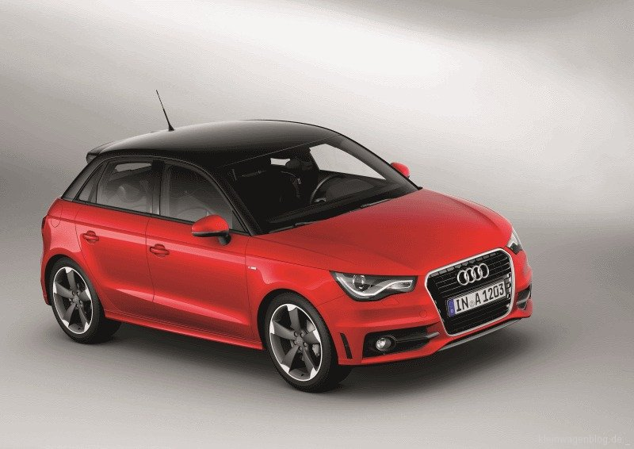

Kombi
Ein Kombi ist ein Auto mit einem großen Kofferraum. Er ist für Familien geeignet, da er viel Platz bietet. Er ist aber auch für Leute geeignet, die viel Platz brauchen, wie zum Beispiel Handwerker.
| A1 | A3 | A6 |
|---|---|---|
|  |  |
 |
| 14.000 Euro, kleines Altagsauto, 190 PS, 280 NM, 4 Sitze, 5 Türen, mit Winterrädern, 130.000 KM gelaufen |
20.000 Euro, mitleres Altagsauto, 200 PS, 300 NM, 4 Sitze, 5 Türen, mit Winterrädern, 100.000 KM gelaufen |
30.000 Euro, großes Luxsusauto, 250 PS, 300 NM, 4 Sitze, 5 Türen, mit Winterrädern, 90.000 KM gelaufen |